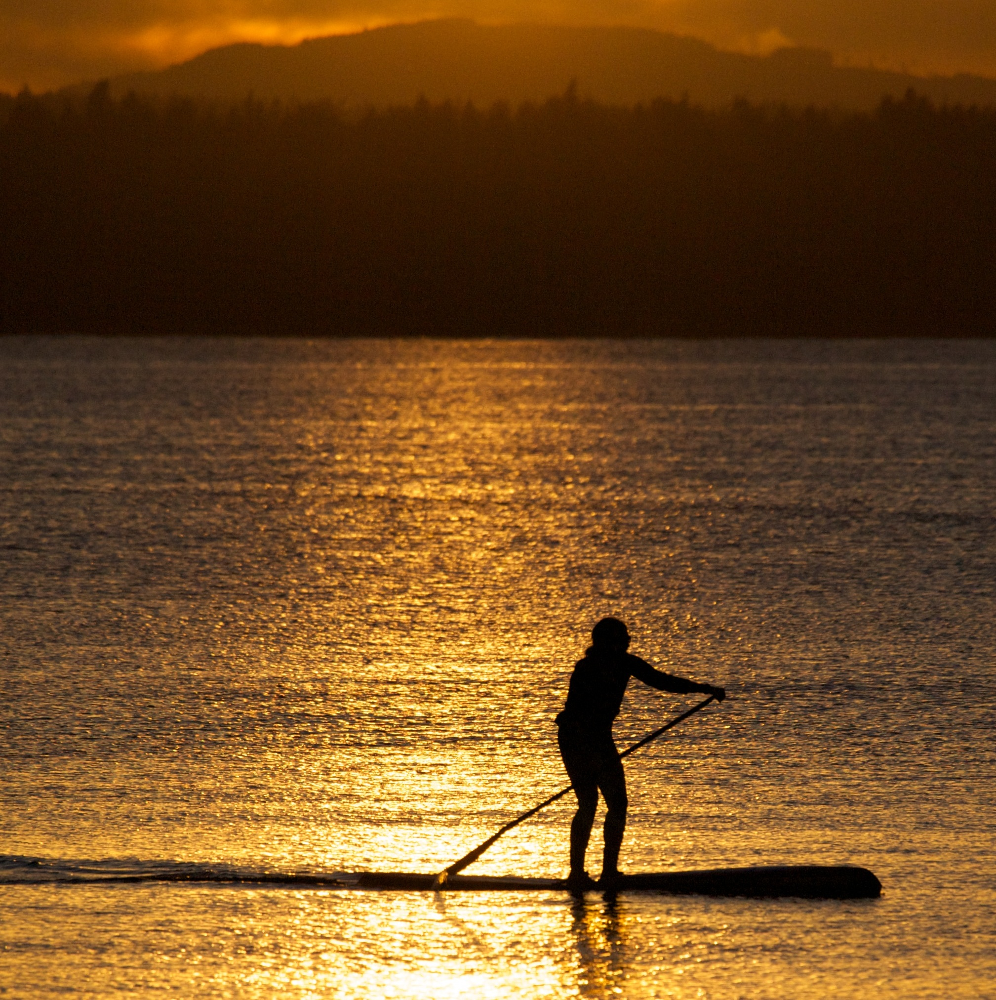

Historia

Decendant of the Pirate Morgan, the inventor of Conforosa Water, and sod-roofed Prarie homesteaders. Above picture is haunted.
Activia
Sarah enjoys kiteboarding, surfing, skiing, and paddling in the Pacific Northwest and elsewhere on her travels. She just tried wakesurfing for the first time at OWC.
Schooling
Sarah graduated from Duke in 2001, after studying abroad in Japan, and Bermuda. She completed a Masters in Fisheries at the University of Washington in 2007.
Work

Sarah works on local coastline ecology as a Professional Wetland Scientist at the Watershed Company, and is a UW Certificate in Wetland Science Advisory Board Member.